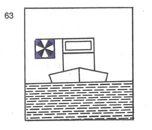

| 1. | Beim Begegnen müssen die Bergfahrer unter Berücksichtigung der örtlichen Umstände und des übrigen Verkehrs den Talfahrern einen geeigneten Weg frei lassen. |
| 2. | Bergfahrer, die Talfahrer an Backbord vorbeifahren lassen, geben kein Zeichen. |
| 3. | Bergfahrer, die Talfahrer an Steuerbord vorbeifahren lassen, müssen rechtzeitig nach Steuerbord zeigen: |
| | a) | bei Nacht: | |
| | | ein weißes helles Funkellicht, das auch mit einer hellblauen Tafel gekoppelt sein darf, |  |
| | b) | bei Tag: | |
| | | eine hellblaue Tafel, die mit einem weißen hellen Funkellicht gekoppelt ist. |  |
| | Die hellblaue Tafel muß einen weißen Rand von mindestens 5 cm Breite haben, Rahmen und Gestänge sowie die Leuchte des Funkellichtes dürfen nur von dunkler Farbe sein. Diese Zeichen müssen von vorn und von hinten sichtbar sein und bis zur Beendigung der Vorbeifahrt gezeigt werden. Sie dürfen nicht länger beibehalten werden, es sei denn, daß die Bergfahrer ihre Absicht anzeigen wollen, auch weiterhin Talfahrer an Steuerbord vorbeifahren zu lassen. |
| 4. | Ist zu befürchten, daß die Absicht der Bergfahrer von den Talfahrern nicht verstanden worden ist, müssen die Bergfahrer folgende Zeichen geben: |
| | "einen kurzen Ton", wenn die Vorbeifahrt an Backbord stattfinden soll, oder "zwei kurze Töne", wenn die Vorbeifahrt an Steuerbord stattfinden soll. |
| 5. | Unbeschadet des § 6.05 müssen die Talfahrer den Weg nehmen, den ihnen die Bergfahrer nach den vorstehenden Bestimmungen weisen; sie müssen die Sichtzeichen nach Nummer 3 und die Schallzeichen nach Nummer 4 erwidern, die die Bergfahrer an sie gerichtet haben. |